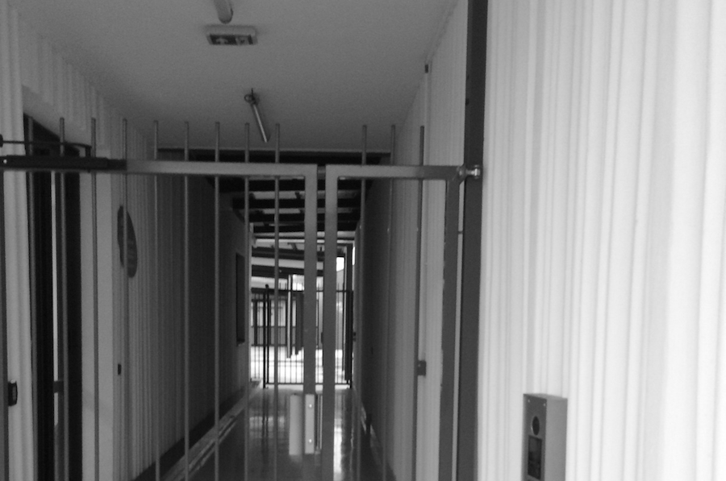
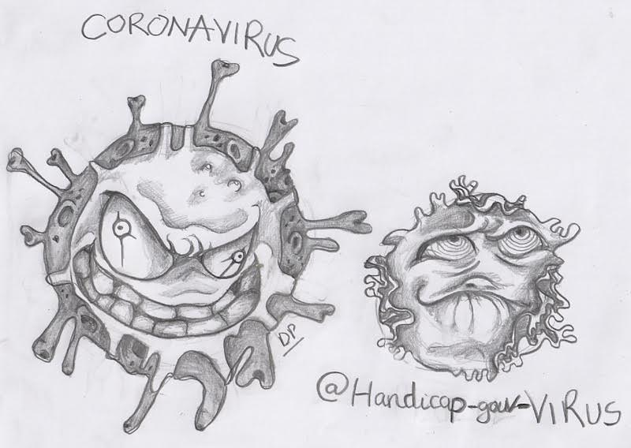

"Convention? Connais pas..."
Un regard sévère de l’ONU sur la politique française du handicap
19 Mars 2019
Autisme: et si on se trompait de la bataille?
24 Novembre 2019Sur la 'protection' en temps troubles
17 Mars 2020"Convention? Connais pas..."
Un regard sévère de l’ONU sur la politique française du handicap

entrée d'une Maison d'Acceuil Spécialisée dans le Rhône.
Le Conseil des droits de l’homme de l’ONU a publié début mars le rapport de Mme Catalina Devandas-Aguilar sur les
droits des personnes handicapées en France, suite à sa visite en 2017. C’est un texte important sur lequel s’appuyer.
Par-delà les exigences du langage diplomatique, ce texte fait plus que pointer des retards, il stigmatise la politique
d’ambiguïté des autorités françaises : discours répétés sur la volonté d’inclusion d’un côté, et en même temps
perpétuation par les «acteurs de terrain» de pratiques ignorant purement et simplement les engagements de la France.
La main gauche ignore ce que fait la main droite. Notons que la rapporteuse ne s’est pas contentée de rencontrer des
interlocuteurs nationaux, mais qu’elle s’est aussi rendue sur le terrain, y compris en province.
On relèvera ici un certains nombre de points significatifs de l’attitude quelque peu perverse de la France, plus
particulièrement concernant le handicap mental.
1/ Les ambiguïtés françaises, en droit:
- Pas de données socio démographiques ni statistiques ventilées par handicap, pas de question sur le handicap lors
du dernier recensement. (Introduction, B.8).
- Propension à interpréter le texte de la Convention Internationale des Droits des Personnes Handicapées (CIDPH)
ratifiée en 2010 :le terme de «consentement» est relativisé, ainsi que le droit de vote (Situation et progrès,
cadre légal, A.9).
- L’article 55 de la Constitution dit que les conventions internationales ont une autorité supérieure et peuvent
être appliquées directement par les tribunaux français (Situation et progrès, cadre légal, A.10). Or on apprend
plus loin que les représentants de l’Etat, les fonctionnaires et autres prestataires de services et les magistrats semblent
ignorer la CIDPH (Situation et progrès, problèmes, C.18).
- La France n’hésite pas à promouvoir un protocole additionnel à la Convention pour les droits de l’homme et de la dignité
de l’être humain (Convention européenne des droits de l’homme) visant à autoriser sans consentement le placement et le
traitement de personnes ayant un handicap psychosocial, en contradiction flagrante avec la CIDPH (Situation et progrès, A.12).
- feuille de route nationale adoptée le 20/09/17 n’intègre pas les principes de la Convention dans les
obligations de l’Etat. (Situation et progrès, problèmes, C.21).
2/ Scolarité et institutionnalisation:
- On relève le souhait et la recommandation que ce soit le système scolaire qui ait à s’adapter aux enfants handicapés,
et non l’inverse comme cela reste de fait exigé d’eux, en dépit des politiques d’inclusion. On sait à quel point cet
aspect est crucial pour les enfants autistes en particulier (Obstacles, Education, C.36).
- La qualité d’établissement éducatifs est déniée aux établissement médico-sociaux, contrairement à ce que le discours
officiel et ambiant ne cesse de prétendre. La France est sommée de fermer ces établissements et de transférer les
ressources financières et humaines consacrées à l’éducation des enfants handicapés au Ministère de l’éducation nationale.
(Obstacles, Education, C.37).
- Les services et établissements pour personnes handicapées, gérées par associations à but non lucratif «proposent des
modes de vie résidentiels et institutionnels plutôt qu’une vie en communauté et l’inclusion». Le rapport qualifie ces
solutions de discriminatoires et paternalistes, et non conformes à la Convention (Obstacles, Protection sociale, E.49).
- Le rapport reproche le placement en établissements, comme réponse à l’invalidité, plutôt que d’opter pour la
transformation de la société et des milieux de vie. 100 000 enfants, 200 000 adultes en institution, donc privés de leur
liberté et isolés. Plus grave encore, les menaces contre les parents s’opposant à l’institutionnalisation, souvent suivies
d’effet : perte de la garde, placement forcé. Il demande un moratoire sur les institutionnalisations et la fermeture de tous
les établissements existants, précisant qu’il n’existe pas de «bon établissement d’accueil» (Obstacles, Autonomie et
inclusion, F. 50-51-53-54).
3/ Santé, tutelle, abus et coercition:
- Le rapport dénonce la surmédicalisation et les placements en hôpitaux psychiatriques des enfants autistes, le packing,
la rareté des professionnels formés aux thérapies et programme de développement et d’éducation reconnus
internationalement (Obstacles, Santé, G.58).
- 385000 personnes handicapées sous tutelle, 360000 sous curatelle. Les autistes sont systématiquement mis sous ces
régimes, pour faciliter leur placement en institution. Juges et avocats ni formés ni sensibilisés. La France doit
supprimer le régime de prise de décision substitutive au profit de système de prise de décision accompagnée (Obstacles,
Capacité juridique, privation de liberté, H.60-61-62).
- Séjour prolongés en hôpital psychiatrique, contention et isolement, recours judiciaire contre ces mesures, les
réformes de 2011 et 2016 restent insuffisantes : en pratique, ça reste peu suivi d’effet. Les traitements ambulatoires
sans consentement ne sont pas soumis à contrôle judiciaire. La France est appelée à éradiquer dans les meilleurs
délais l’ensemble des pratiques coercitives en psychiatrie (Obstacles, Capacité juridique, privation de liberté,
H.64-65-66).
Enfin, parmi les recommandations et conclusions, est dénoncé comme obstacle à une évolution saine le fait que les
personnes handicapées soient considérées comme devant être prises en charge plutôt que comme sujets de droit. Quant
aux projets et autres feuilles de route gouvernementales, le rapport incite à ce qu’ils ne restent pas vœux pieux et
soient assortis de délais et plans de mise en œuvre aussi bien au niveau local que territorial. Dans le détail, les
recommandations répondent aux manquements et obstacles constatés au fil du rapport.
Un outil pour faire valoir le droit devant les tribunaux?
Le rapport relève que :
Conformément à l’article 55 de la Constitution française, les conventions internationales, y compris la Convention
relative aux droits des personnes handicapées, ont une autorité supérieure et peuvent être appliquées directement par
les tribunaux nationaux.
Autisme: et si on se trompait de bataille?
Pétitions et communications, toujours et encore.
La communauté des familles françaises des personnes autistes part, une énième fois, à la chasse au psykk (pour les
non-initiés: psychanalyste): une pétition, lancée par Sophie Robert, la réalisatrice des films ciblant cette (psudo)
discipline circule sur facebook, avec l’imagerie victorieuse du nombre de signatures des professionnels qui demandent
de bannir la psychanalyse des tribunaux. Les psykk, eux, ont leur propre pétition - s’indignant de la première - qui
réunit un nombre des signature au moins dix fois supérieur. En bonnes règles de la guerre facebookiste, les deux camps
jubilent.
Par ailleurs, le film “Hors normes”, fraichement sorti sur les écrans, crée un réveil des consciences (comme si on
apprenait quelque chose) mais divise en même temps. Les uns saluent la visibilité de « l’autisme sévère », les autres
soupçonnent les protagonistes d’être des crypto-psykk, d’autres encore voient dans le film le triomphe du modèle
médical de l’autisme.
Toujours dans le même temps, 55 associations de (en grand partie) parents des enfants autistes se fendent d’une
communication avec
une liste d’exigences pour le gouvernement. Elles revendiquent, comme toujours, le diagnostic, si possible précoce.
Pour quoi faire? Pour traiter le plus rapidement - modèle médical oblige. Traiter comment? C’est là que ça se
complique. Il y a une quinzaine d’années, la réponse paraissait trouvée: avec de l’ABA (Applied behavior analysis,
une méthode de modification du comportement par une approche béhavioriste). Les “psykk” régnaient alors sans partage
et traitaient les enfants autistes avec leur méthodes du divan et ça marchait pas : ça marchait pour les psykk
(qui ont mis des gros sous - y compris publics - dans leurs poches) mais pas pour les personnes autistes. L’ABA
c’était du concret et c’était « scientifique ». Les belles histoires des réussites avec de l’ABA ont envahi les
réseaux sociaux naissants. Les psychologues se revendiquant de cette obédience ont commencé également à faire des
profits, au grand dam des psykk.
Pendant que, dans le monde anglo-saxon, sur le fond du modèle social enraciné, émergeaient de forts mouvements pour
les droits des personnes handicapées (disability rights), dans le pays de la Déclaration des droits de l’homme,
le devant (et même l’arrière) de la scène était solidement occupé par le débat entre les approches psychiatriques
divergentes. Et c’est toujours le cas aujourd’hui. La tension est telle qu’il est devenu quasiment impossible de
choisir un autre discours sur le handicap mental que celui, partisan d’un de deux camps. Cela est bien illustré par
le sort de Laurent Mottron, lequel, osant s’écarter de la bataille anti-psychanalyste en montrant d’autres enjeux
plus essentiels, a été estampillé comme "psykk dangereux" sur les réseaux sociaux, suite à la sortie de son livre
en 2015. Car la bataille "anti-secte" a fini par créer une secte unie par la croyance profonde d’avoir identifié
la racine du mal et s’accordant sur le but de l’éradiquer. Depuis quelque temps, l’euphorie autour de l’ABA semble
cependant retomber : on s’est rendu compte qu’ailleurs, les béhavioristes sont de plus en plus critiqués, surtout
par des personnes autistes elles-mêmes. La perplexité s’installe.
Pendant ce temps, la casse continue.
C’est le lourd tribut du modèle médical : les associations de parents des personnes handicapées en sont réduites à
choisir la "meilleure" approche médico-psychiatrique. Et d’espérer que celle-ci "va marcher". Cette position coûte
cher non seulement à ceux qui ressentent l’autisme comme part de leur identité, mais aussi et surtout à ceux qu’on
classera comme cas sévères et pour qui aucune place n’a été envisagée dans la société, laquelle misait sur la
«victoire sur l’autisme ». Ces cas sévères émeuvent tant qu’ils sont enfants, mais effrayent et embarrassent, une
fois devenus adultes. On les appelle aussi des profils; on parle des ces personnes-là comme faisant partie
d’un spectre - ou plutôt du
"bas du spectre". Des "cas", que logiquement, il faut "caser". C’est là qu’un autre détournement langagier entre en
scène : au lieu de parler franchement des institutions, ou même très franchement - des ghettos - on réclame des
structures et des places. C’est ça que revendiquent les 55 associations: des
“places en prévision”.
Ce type de pensée - séparation des spectres et des profils - devient une prophétie auto-réalisante.
Les personnes avec les besoins spécifiques les plus complexes sont mis en vis-à-vis de ces besoins et de leur
complexité - et non pas dans la communauté - dès le plus jeune âge. Les enfants "qui ne réussissent pas" dans les
unités spécialisées de la maternelle
sont dérivés vers les instituts médico-éducatifs, pour laisser la place à ceux qui pourront avoir plus de chance.
Ces futurs cas sévères sont ainsi privés de l’interaction sociale dès le plus jeune âge, et n’ont souvent
aucune opportunité d’apprendre la vie en société en dehors de la famille (quelle que bienveillante qu’elle soit).
Des droits ou des places?
Il est remarquable et symptomatique que cet énième communiqué des associations ne contient aucune référence à la
Convention de l’ONU relative aux droits des personnes handicapées (CDPH). L’explication n’est pas uniquement dans
l’ignorance de cet instrument international - dix ans après sa ratification -
souligné par la Rapporteuse Spéciale de l’ONU lors de sa visite en France. La Convention, avec son esprit fondé
sur l’égalité en droits, l’autonomie et l’inclusion, ne se mélange pas avec le paradigme français, pas plus que l’eau
avec l’huile. Selon les articles 12 et 14 nul ne doit être placé et déplacé comme un objet, car chaque personne
est un sujet de droit et agent de ses choix. L’article 19 consacre le droit de la vie dans la communauté. Le séparation
des profils et des cas est en soi-même arbitraire, et mène systématiquement vers la privation
arbitraire de liberté,
comme le souligne l’Observation Générale du Comité de l’ONU du 11 Avril 2014. Les articles 12, 14 et 19 sont liés
intrinsèquement : la capacité civique et juridique n’a de sens que si le sujet (de droit) vit dans une société où celle-ci
peut s’exercer. L’indépendance est, en fait, le pendant de l’inter-dépendance : les liens qui nous lient aux autres et sans
lesquelles nous ne sommes, socialement parlant, rien, sont ceux qui tissent nos choix, petit et grands. L’indépendance n’a
aucun sens sans cette interdépendance, car l’autonomie se joue dans l’affirmation de soi-même en face et en fonction des
autres.
Il est inexact de dire que la question de la capacité juridique ne concerne que les adultes, car la différence qui va
être opérée à l’âge adulte détermine la perspective de l’éducation : on ne se souciera pas d’éduquer à l’autonomie si on
suppose que cette autonomie ne sera jamais ni accordée ni exercée. Le rejet des enfants différents de l’école vient
précisément de cette source : dans l’absence de but digne d'efforts. Une fois et sitôt que la capacité de survivre
seul dans le monde est mise en doute chez l’enfant, la force centrifuge se met en route afin de l’éjecter
vers la périphérie “spécialisée” - qui est une périphérie bien plus définitive que toutes les autres dans le monde
social d’aujourd’hui.
Ceci malheureusement échappe aux 55 associations qui, tout en se croyant être dans une revendication juste et
progressiste face au gouvernement français qui ne respecte pas ses obligations, véhicule cette image d’une personne -
objet isolé (l’expression n’est jamais utilisée, mais le sens est là), dont il s’agit de prendre soin - et non pas
lui assurer le droit à l’autonomie. Ce terme (l'autonomie) n’est d’ailleurs jamais mentionné - ni comme réalité ni comme objectif.
Nombre d'associations, telle l’UNAPEI, sont ouvertement hostiles à toute idée de l’autonomie et de l’inclusion
qu’elles soupçonnent être forcement au rabais, et donc de n’être que le masque d’une économie de moyens. Le nombre des
personnes sous tutelle
grimpe en progression géométrique, la France présentant le pourcentage des personnes privées des droits civique et de
tout choix le plus élevé en Union Européenne.
Les voix des personnes et organisations qui fondent leur revendication sur le droit (à la vie dans la société et la
capacité juridique) sont inaudibles en France et peuvent se compter sur les doigts d’une main. Les familles qui ont
compris qu’il n’y a pas de salut en dehors de l’inclusion essayent de bricoler une niche dans un grand isolement, en
prenant toute la charge du travail sur elles-mêmes et sans aucune garantie que leur projet leur survivra; à part
quelque exemples de réussite, cités en boucle, l’unique solution pour les personnes handicapées mentales aujourd’hui se
résume à l’exclusion et la sédation autant que nécessaire pour la rendre acceptable.
Commencer à changer la donne suppose de définir un objectif. Entre la peau des psykk et la lutte pour d’application
des droits fixés dans la Convention, même si la chasse aux premiers (restant globalement virtuelle) est plus sûre et
rodée, il faudrait faire un choix. Pour ne pas se voir, 40 ans plus tard, cliquer toujours sur le bouton d’une
pétition, faute d’alternative.
Sur la 'protection' en temps troubles

La Secrétaire d’Etat pour des personnes handicapées Sophie Cluzel a décidé, 3 jours en amont du confinement pour tous
les autres Français, de la mesure d’isolement total des personnes handicapées dans les établissements médico-sociaux,
sans aucune autorisation de sortie et ni de visites de l’extérieur. Les mêmes mesures ont été prises auparavant par
le gouvernement envers les personnes âgées résidant dans les EHPAD. Alors que les réseaux sociaux saturent des
réactions et questionnements comment survivre ne pouvant sortir que pour dégourdir les jambes et faire ses courses,
tout le monde en France semble acquiescer que les handicapés n’ont aucun besoin même de cette petite fenêtre de la
liberté. Aucune association, à ce jour et à notre connaissance, aucun représentant politique ni l’instance de la
défense des droits de l’homme en France n’a protesté publiquement contre cette mesure de privation de liberté basée
sur le handicap et on ne peut plus arbitraire et cruelle. Seules quelques voix éparses - aucune venant du milieu
associatif - ont pu se faire audibles (lien vers l'article dans le Monde).
C’est la première fois, depuis la fin de la seconde guerre mondiale qu’une partie de la population se voit être
totalement isolée du reste de la communauté (quand la communauté est juste demandée de limiter les déplacements).
Si, comme nous dit la presse, les EHPAD essayent d’organiser le contact des personnes agées via téléphone et internet,
ceux, parmi elles, gravement atteintes ainsi que les personnes avec une altération de la communication verbale ne
pourront pas compter sur ce dispositif. Pour elles, plus que pour les autres, la présence tangible des personnes
proches est essentielle pour la survie - autant psychique que très souvent - physique.
On sait que cet isolement risque de provoquer des souffrances, des protestations et des crises. En absence de tout
contrôle extérieur et indépendant dans les établissements médico-sociaux où tout est permis en temps ‘normal’, en
temps ‘extraordinaire’ tout type de maltraitance peut subvenir car l’ambiance est à l’abolition des barrière en
‘temps exceptionnels’.
D’aucun vont dire que cette mesure là, bien que drastique sert à ´protéger ces personnes’. Rien n’est plus faux… et
plus vrai. Faux, parce que les personnes handicapées ne souffrant pas d’une pathologie médicale stricto-sensu ne sont
pas dans le groupe à risque et, d'autre part, leur regroupement dans un lieu fermé constitue, justement, un facteur
de risque. Vrai - parce que fidèle à l’usage détourné du terme de ´protection’ adopté en France (mais aussi dans
beaucoup d’autres pays, ne nous leurrons pas) envers les personnes handicapées. La ‘protection’ se résume à une
extraction de la société. La peur du virus ne change rien - elle exacerbe les choses et dévoile impitoyablement toute
l’hypocrisie de la société qui lâche, comme du lest, les ‘plus vulnérables’ qu’elle prétend ´protéger’.
On se dit qu’aucune mesure n’est trop sévère pour contrer la menace du virus. Aucune? Est on vraiment prêt sacrifier
l’essentiel de l’existence humaine - la liberté et les relations humaines - pour la promesse de la conservation des
vies biologiques? La réponse apparemment serait oui, surtout s’il s’agit de la liberté des autres. Qui parmi nous,
libres de décider pour nous même, accepterait d’être coupé - totalement et pour une durée indéterminée - du monde:
pas seulement ne pas sortir, mais ne pas pouvoir recevoir aucune nouvelle ni n’en donner aucune (ne parlant que peu
ou pas du tout), dans l’angoisse et l’incompréhension de ce que se passe? Qu’une secrétaire d’état qui accepte
bravement le rôle d’un pantin édite une oukase de pareille inhumanité n’est plus surprenant, mais le silence des
con-citoyens et, en particulier, ceux qui prétendent défendre les droits de tous les handicapés, ce silence-là sonne
comme le glas de toute prétention - de la moindre prétention - de la solidarité dans ce pays (la liberté ayant été
enterrée il y a déjà un moment, la fraternité n’était qu’un malentendu dès le départ).
Pourtant, l’illégalité de la mesure saute aux yeux: l’état d’urgence n’a pas été décrété et toute restriction de
liberté ne peut être décidée unilatéralement. L’ONU vient de rappeler que toute mesure dans la bataille avec le
coronavirus doit être proportionnelle - et on peut croire qu’elle l’est, pour la plupart des citoyens, car on les
demande juste de ne pas trainer dans les rues sans force majeure. Mais les personnes dans les institutions sont en
dehors de toute zone de la loi, même très réduite, où s’entassent tous les autres. Le caractère absolu de l’égalité
devant la loi (ne pouvant être suspendu même pendant l’état de guerre) ne s’applique visiblement pas aux personnes
privées du statut du citoyen en temps ‘normal’- pourquoi donc on le demanderait maintenant, car tout ce qu’ils
représentent pour nous, les libres, c’est le réceptacle potentiel du virus.
Du virus, pas des droits.